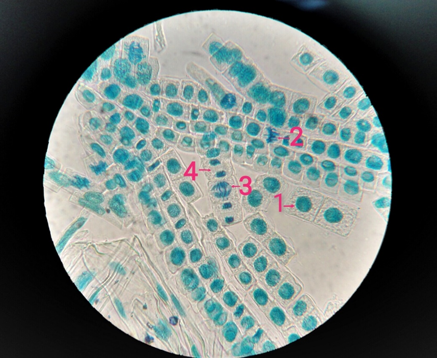
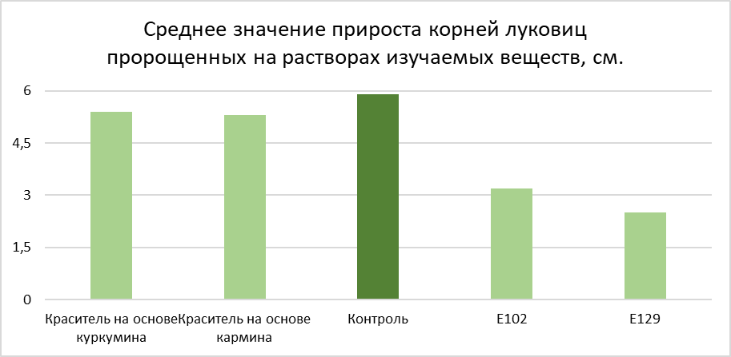
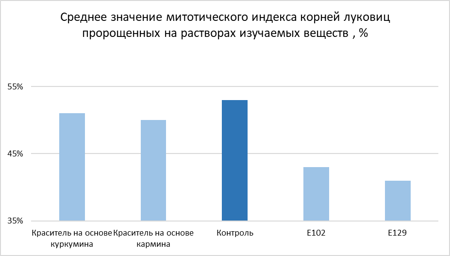

Содержание
Введение
Пищевые красители — вещества, придающие пищевым продуктам цвет или усиливающие их природную окраску. Они являются важным классом пищевых добавок, используемых для восстановления естественного цвета, утраченного в процессе обработки, или для придания продуктам привлекательного внешнего вида.
Согласно данным Всемирной организации здравоохранения (ВОЗ), использование пищевых красителей строго регламентируется международными стандартами безопасности. Каждому разрешенному красителю присваивается индекс Е в диапазоне от Е100 до Е199.
Исторически для окрашивания пищи использовались натуральные вещества растительного, животного и минерального происхождения. С развитием органической химии в XIX веке началось активное использование синтетических красителей, отличающихся более высокой стабильностью, интенсивностью окраски и низкой стоимостью.
Классификация пищевых красителей
По происхождению пищевые красители делятся на две основные группы:
Натуральные
Получаемые из природных источников: растений, животных, минералов. Примеры: куркумин (Е100), хлорофилл (Е140), каротиноиды (Е160).
Синтетические
Производимые химическим синтезом. Обладают высокой стабильностью и интенсивностью окраски. Примеры: тартразин (Е102), азорубин (Е122).
История и применение пищевых красителей
Пищевые красители (Е100 - Е199) – это вещества, используемые для придания определенной окраски продуктам, которые мы употребляем в пищу. С течением времени и развитием технологий изменился и рацион питания человека: от натуральных продуктов, выращенных в собственных огородах без применения химических ускорителей роста и других добавок, наше общество перешло к потреблению продуктов, которые выращиваются с помощью большого количества химических веществ. Кроме того, многие продукты изготавливаются в промышленных масштабах, поэтому они должны выглядеть красиво, иметь приятный аромат и долго храниться. Для создания такой «красоты» зачастую применяют химические добавки (консерванты, красители, загустители и т.д.), которые в больших количествах вредны для организма человека. Производители пищевых продуктов зачастую не задумываются о том, какой вред они наносят здоровью потребителей. Для потребителя цвет продукта имеет большое значение, поэтому пищевые красители входят в состав многих блюд, проходивших технологическую обработку.
Ещё во времена античности использовали пищевые красители, например, Гомер в своей «Илиаде» писал о том, что в блюда добавляли шафран для придания красивого вида. Про красители для придания насыщенных оттенков вину писал Плиний старший в 400 г. до н.э. Часто для получения натуральных красителей использовали куркуму (насыщенный оранжевый оттенок), жидкость каракатиц (черный цвет), из щитковых тлей получали красители красного оттенка (кармин). В средневековье применяли мел и известняк для подкрашивания хлеба в белый цвет.
В начале ХIХ века в 1820 г. Фредерик Аккум (англ. химик) впервые написал статью, в которой отразил продукты, для приготовления которых применяли токсичные красители. Особенно это касалось производства чая и кофе. В конце ХIХ века изготовители натурального сливочного масла добились запрета на добавление в маргарин желтого красителя, который придавал ему цвет масла.
К ХХ в. значительная часть синтетических пищевых красителей имела анилиновое происхождение, т.к. это вещество делали из каменного угля оно имело дешёвую стоимость. Низкая цена красителей из такого сырья стала причиной вытеснения натуральных красителей с рынка. В 1906 году Конгресс Соединенных Штатов Америки смог добиться снижения количества красителей в продуктах питания от 80 до 7. К концу ХХ в. стало обязательным для производителей всех пищевых продуктов указание на упаковке всех красителей искусственного происхождения.
В ХХI в. люди начали чаще задумываться о том, чем они питаются. Всё чаще предпринимаются попытки запретить в пищевой промышленности многие из используемых пищевых добавок, в том числе и красителей, изготовленных из дешевого сырья синтетическим путем.
Allium-test как растительная тест-система
Allium-тест — растительная тест-система на основе корешков лука Allium cepa. Метод разработан более 70 лет назад шведским ученым Альбертом Леваном, который наблюдал нарушения митоза и изменения хромосом под действием веществ. В 1970-х тест рекомендован Шведской академией наук для скрининга мутагенов, а в 1985 году признан ВОЗ как стандартная генетико-токсикологическая методика.
В середине 1990-х М. Нельсон и Дж. Ранк усовершенствовали ана-телофазный анализ, выделив основные типы хромосомных нарушений (отставания, мосты, фрагменты) на луке сорта Штутгартен Ризен.
Преимущества Allium cepa
Доступность, низкая стоимость, простота хранения и круглогодичного использования.
Высокая чувствительность и воспроизводимость результатов.
Хорошая корреляция с данными, полученными на млекопитающих.
Возможность оценки токсических, митозмодифицирующих и мутагенных эффектов.
Характеристики объекта
Диплоидный набор (2n=16), хромосомы хорошо окрашиваются.
Стабильность митотических показателей в меристеме корня.
Позволяет проводить ана-телофазный анализ, подсчет митотического индекса и выявление нарушений деления.
Макроскопический эффект (подавление роста корней) — наиболее чувствительный показатель токсичности. Тест эффективен даже при низких концентрациях загрязнителей, незаметных в других системах, и указывает на потенциальный биологический риск.
Материалы и методы исследования
Место проведения: НИЛ органического синтеза КГУ.
Методы: Allium-тест (моделирование), наблюдение, измерение, световая микроскопия.
Материалы и оборудование: луковицы Allium cepa, растворы пищевых красителей (150 мг/л), микроскоп («Микромед-1»), фиксатор Кларка (этанол + уксусная кислота, 3:1), 1М HCl, метиленовая синь, лабораторная посуда и инструменты.
Приготовление фиксатора: 75 мл 96% этанола + 25 мл ледяной уксусной кислоты. Хранить в тёмной стеклянной посуде в холодильнике не более 7 дней.
Подготовка и проведение эксперимента
Для исследования отобрали здоровые луковицы Allium cepa (диаметр 2 см). Их поместили в контейнеры с растворами красителей (150 мг/л) так, чтобы донце было погружено в жидкость. Контроль — водопроводная вода.
Через 72 часа:
Провели визуальный осмотр корней.
У трёх луковиц из каждой пробы измерили пять самых длинных корешков (данные внесены в таблицу).
Корешки срезали, промыли и зафиксировали на сутки в фиксаторе Кларка.
Приготовление препаратов Фиксированные корешки:
Промывали водой (5 мин). Подвергали мацерации в 1М HCl (60°C, 3,5 мин). Окрашивали метиленовым синим (30 сек), излишки смывали уксусной кислотой. Отделяли апекс (1–2 мм), помещали на предметное стекло в каплю воды, накрывали покровным стеклом и слегка придавливали для получения монослоя.
Микроскопия и подсчёт
Препараты изучали под микроскопом «Микромед-1». При малом увеличении (40×) находили зону деления, затем при максимальном — фотографировали все поля зрения (около 15 кадров ≈ 1000 клеток).

На фото подсчитывали клетки в разных фазах митоза. Данные вносили в таблицу для расчёта митотического индекса.
Анализ результатов
На основе полученных данных сделали вывод о влиянии красителей на тест-объект.
Результаты исследования
На данном этапе исследования проводили измерение проросших корешков у каждой луковицы. Измеряли по пять наиболее длинных корешков для подсчета средних показателей прироста. Данные отражены в таблице и на диаграмме.
| Контроль, см | Краситель на основе куркумина, см | Краситель на основе кармина, см | Синтетический краситель Е102, см | Синтетический краситель Е129, см |
|---|---|---|---|---|
| 5,9 | 5,2 | 4,8 | 3,7 | 2,8 |
| 5,8 | 5,4 | 5,6 | 3,1 | 2,5 |
| 5,8 | 5,7 | 5,5 | 2,8 | 2,2 |
| Средняя длина по трем луковицам, см | ||||
| 5,9 | 5,4 | 5,3 | 3,2 | 2,5 |

Как видно из таблицы и диаграммы, натуральные красители на основе куркумина и кармина не оказывают существенного влияния на прирост корней тест-объекта. Синтетические красители Е102 и Е129, напротив, оказывают ингибирующий эффект на скорость прорастания луковиц, что косвенно говорит о том, что они токсичны для живых организмов в данной концентрации.
На данном этапе исследования был проведен подсчет клеток, находящихся в различных фазах митоза для расчета митотического индекса. Митотический индекс отражает число клеток, находящихся в разных фазах деления по отношению к общему числу изученных клеток каждого образца. Митотический индекс рассчитывается по формуле:
Результаты представлены ниже в виде таблицы и диаграммы
| Контроль, % | Краситель на основе куркумина, % | Краситель на основе кармина, % | Синтетический краситель Е102, % | Синтетический краситель Е129, % |
|---|---|---|---|---|
| 54 | 49 | 51 | 41 | 43 |
| 53 | 52 | 49 | 43 | 41 |
| 51 | 51 | 49 | 44 | 39 |
| Среднее значение митотического индекса по трем луковицам, % | ||||
| 53 | 51 | 50 | 43 | 41 |

Данные, отражающие количество делящихся клеток, подтверждают, что снижение скорости прорастания корней связано с негативным влиянием синтетических красителей Е102 и Е129 на луковицы, что подтверждает наличие токсического эффекта, который они оказывают при данной концентрации. Красители, изготовленные на основе натуральных ингредиентов, не оказывают выраженного негативного действия на скорость митоза, что соответствует данным, отражающим прирост корней.
Заключение
В ходе работы были выполнены поставленные задачи.
Изучена и проанализирована литература и Интернет - источники, касающиеся темы применения и вреда синтетических пищевых красителей, их классификации и свойств.
Проведена серия опытов на основе методики Allium – test с целью изучения влияния натуральных и синтетических пищевых красителей на прорастание и митотическую активность корней луковиц.
В результате опытов подтвердилась гипотеза, выдвинутая вначале проектной работы. Синтетические красители действительно оказывают ингибирующее действие на скорость прорастания корней лука, а натуральные красители выраженного негативного влияния не имеют.
Процент клеток, находящихся в стадии деления ниже в образцах, пророщенных в растворах синтетических красителей Е102 и Е29, в сравнении с образцами, проращиваемыми на растворах красителей, изготовленных на основе натуральных ингредиентов.